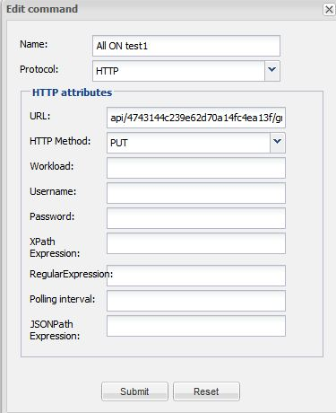

Hi all,
I try to operate my Philips Hue lamps but i cant manage to control them.
I used HTTP, put the url and the command but nothing happend.
I can send commands using iRule on the iPhone that works. (Put in the url from the Hue controller, port and command)
Does anyone have this working or knows a solution to get this working?

{kind=link}
{kind=link}
{kind=link}
|
See: http://www.openremote.org/display/docs/OpenRemote+2.0+How+To+-+HTTP+Protocol |
|
Polling interval is only needed for status command which are connected to a sensor. |
|
Hi Michel, i tried to controle my hue's this way and it works ( sometimes ). I think, in the actual release of Openremote are some bugs and problems with http and json. This is my command for ON: This is the full HTML Attributes URL:
http://your-ip-adress/api/your-api-key/lights/1/state
Regards, |
|
Just to add a data point: I see the same behavior depending on whether or not I press a button 3 times quickly (I had not tried this before seeing Chris's comment). If I press the button thrice quickly, I get I don't have the "Content Type" field available for entry, as Chris does, because I am not using the pro or preview version. I had, however, added the line "<property name="contentType" value="application/json" />" in the controller xml file as discussed, here: http://www.openremote.org/pages/viewpage.action?pageId=21859973. Seems to still work with that line now removed, though. |
|
Guys, I tested the latest version with a small test server (I don't have a hue Can you try and use this version for the controller: http://sourceforge.net/projects/openremote/files/For%20Developers/OpenRemote%202.1%20%28Developer%20Releases%29/OpenRemote-Controller-2.1.0_FM_SNAPSHOT-2013-07-18.zip/download And then replace the file: /webapps/controller/WEB-INF/classes/org/openremote/controller/protocol/http/HTTPGetCommand.class This is how my command looks like: Maybe somebody can give it a try? |
|
Hi, so the replace of the HTTPGetCommand.class fix the issue on the lateste voyage_ebox_v1.4.10_20130802.img. thx |
|
Great! |
|
I discovered OpenRemote today after acquiring a Hue. I've made it work with iRule, but OpenRemote allows for a much nicer UI....but I can't get Hue to behave with OpenRemote at all I'm using OpenRemote-Controller-2.0.2 at the moment, and trying : URL : http://my_hue_controller/api/my_hue_key/light/1/state
METHOD : PUT
WORKLOAD : {"on":true}
And it flat out doesn't work. URL : http://my_hue_controller/api/my_hue_key/light/1 METHOD : GET JSONPath : $.state.on And that doesn't work either....but using the Hue API the JSON I get back from that URL is: {
"state": {
"on": true,
"bri": 254,
"hue": 41457,
"sat": 120,
"xy": [
0.2992,
0.3005
],
"alert": "select",
"effect": "none",
"colormode": "xy",
"reachable": true
},
"type": "Color light",
"name": "Light Strip 1",
"modelid": "LST001",
"swversion": "66010400",
"pointsymbol": {
"1": "none",
"2": "none",
"3": "none",
"4": "none",
"5": "none",
"6": "none",
"7": "none",
"8": "none"
}
}
And if I use http://jsonpath.curiousconcept.com/ and paste the above JSON in, the query ($.state.on) returns "true" If JSON/HTTP support behaves, I will be all over OpenRemote like a rash....and I'm willing to try/beta etc. |
|
Did you try the verison I posted 2 comments up? |
|
Lo, I missed that - (thanks) and have tried it. SOME success - as follows Setting up a simple "On" and "Off" command (as above) now works, and when I refresh the config at the local controller I see : INFO 2013-09-01 10:50:17,161 : No rule definitions found in '/opt/OpenRemote-Controller-2.1.0_FM_SNAPSHOT-2013-07-18/webapps/controller/rules'. INFO 2013-09-01 10:50:17,162 : Initialized event processor : Drools Rule Engine INFO 2013-09-01 10:50:17,192 : Initialized event processor : RRD4J Data Logger INFO 2013-09-01 10:50:17,193 : Initialized event processor : EmonCMS Data Logger INFO 2013-09-01 10:50:17,194 : Startup complete. And in the http.log I see (after a power off) : INFO 2013-09-01 10:58:51,335 (HTTP): received message: [{"success":{"/lights/1/state/on":false}}]
Then, if I try to add a "Power_State" command (which is a simple URI get, no workload, a refresh/poll of 5s, and the JSONpath of $.state.on), I then start seeing : INFO 2013-09-01 10:54:01,503 : No rule definitions found in '/opt/OpenRemote-Controller-2.1.0_FM_SNAPSHOT-2013-07-18/webapps/controller/rules'. INFO 2013-09-01 10:54:01,503 : Initialized event processor : Drools Rule Engine INFO 2013-09-01 10:54:01,520 : Initialized event processor : RRD4J Data Logger INFO 2013-09-01 10:54:01,520 : Initialized event processor : EmonCMS Data Logger INFO 2013-09-01 10:54:01,522 : Startup complete. And in http.log I now see (every 5 seconds): INFO 2013-09-01 11:02:46,635 (HTTP): received message: {"state": {"on":false,"bri":224,"hue":47104,"sat":254,"xy":[0.1380,0.0800],"alert":"select","effect":"none","colormode":"xy","reachable":true}, "type": "Color light", "name": "Light Strip 1", "modelid": "LST001", "swversion": "66010400", "pointsymbol": { "1":"none", "2":"none", "3":"none", "4":"none", "5":"none", "6":"none", "7":"none", "8":"none" }}
So it's receiving the JSON back, with the correct state..... Then I add a sensor, to use the Power_State command, I see : INFO 2013-09-01 10:55:47,620 : No rule definitions found in '/opt/OpenRemote-Controller-2.1.0_FM_SNAPSHOT-2013-07-18/webapps/controller/rules'. INFO 2013-09-01 10:55:47,620 : Initialized event processor : Drools Rule Engine INFO 2013-09-01 10:55:47,638 : Initialized event processor : RRD4J Data Logger INFO 2013-09-01 10:55:47,638 : Initialized event processor : EmonCMS Data Logger INFO 2013-09-01 10:55:47,643 : Registered sensor : Switch Sensor (Name = 'Power_State', ID = '56') INFO 2013-09-01 10:55:47,644 : Startup complete. But when I add a text label and slave it to the sensor, the label always reads "N/A" ? (rather than "Off" or "On" as I defined in the label properties.... EDIT : I've changed the sensor to "custom" and it's now updating the label, so it doesn't like being a "switch".... |
|
I think it's behaving I've now got a slider to read/set the brightness value, and it's working nicely, although it only updates upon slider release - rather than immediate position which is a shame Question : Will there be any possibility to script within the Controller? EDIT: My googling is slower than my questioning. I've found the advanced event examples, including one for RGB. |
|
I just sent Patrice an example for that |
|
Send it to falcon AT gothtech DOT co DOT uk please |
|
Hi - did you send it? I don't see anything (or a way to PM you on this style of forum) :\ |
|
Yes, right after you gave me the email. |
|
Ahah, you are correct. Rather bizarre that my end mail system (GMail) it picked it up as spam :\ |
|
Ok, now I'm very confused. a) I've copied your rules into my rules - and amended your "SetHueColor" to reference my "Set_State_Hue" command {"hue":${param},"on":true}
It's not working... I'm using OpenRemote-Controller-2.1.0_FM_SNAPSHOT-2013-07-18 with the HTTPGetCommand.class fix |
|
Hurrah! With the very kind help of Marcus (and lots of fiddling) I now have a working colour picker. I've also pseudo-extended it by adding a brightness sensor and slider, and a rule that if the brightness is set to <= 1, then power down the bulb (in Hue terms, 0 brightness isn't actually off). It would be really cool (if not already possible) if you could use an HTTP (or other) command to SET something (like a value) AND set a variety of values (with various JSON paths) This is because to read bri, sat & hue, I have to issue three commands with 3 JSON paths, which is 3 HTTP calls, although one HTTP call actually returns all three values. Also, being able to pass multiple params to a command would be ace - as Hue (as one example) needs specific device ID in the URL, and it would be nice to re-use commands across bulbs, rather than "clone" commands Pete! |
|
Hmm, didn't explain myself very well there, although it was nearly midnight. When issuing an HTTP PUT or POST, you can specify a JSON path variable so you can (in theory) get the result of a command, or alternately, you could issue a GET command to another URL and acquire a set of parameter statuses. However, if I want to have 3 sensors for 3 lights, I have to issue 3 http queries. If I'm also issuing controls to the lights, I've noticed a bit of lag, probably due to the sensor monitoring at the same time as the command issuing. What would be quite good would be a "master" and "slave" sensors, with a master sensor using 1 command/transaction, and holding the response in memory, and the slave sensors querying the master in memory results (via varying JSON paths) Thoughts? |
|
It should be possible with rules to simulate your master/slave concept. Another solution would be to fill multiple sensor based on the result of one command. This came up a few times already but is not available yet. |
|
Hi, I am a student working on the open-remote for my thesis project. Right now, I meet a problem to control the Philips hue, with the local controller (source code). I'm using Controller_2_1_0_FM_SNAPSHOT-20130617 with the HTTPGetCommand.class fix, but the function doesn't work. When I pressed the button, I got the following logs: lights/3/state","description":"invalid/missing parameters in body"}}] Curl works just fine BTW: Input: Unknown macro: {"on"} " http://10.2.1.10/api/NDKhueapps/lights/1/stateOutput: [{"success":{"/lights/1/state/on":false}}] I would appreciate it, if you could give me some hint about how to cope with this problem... |
{kind=link}
{kind=link}